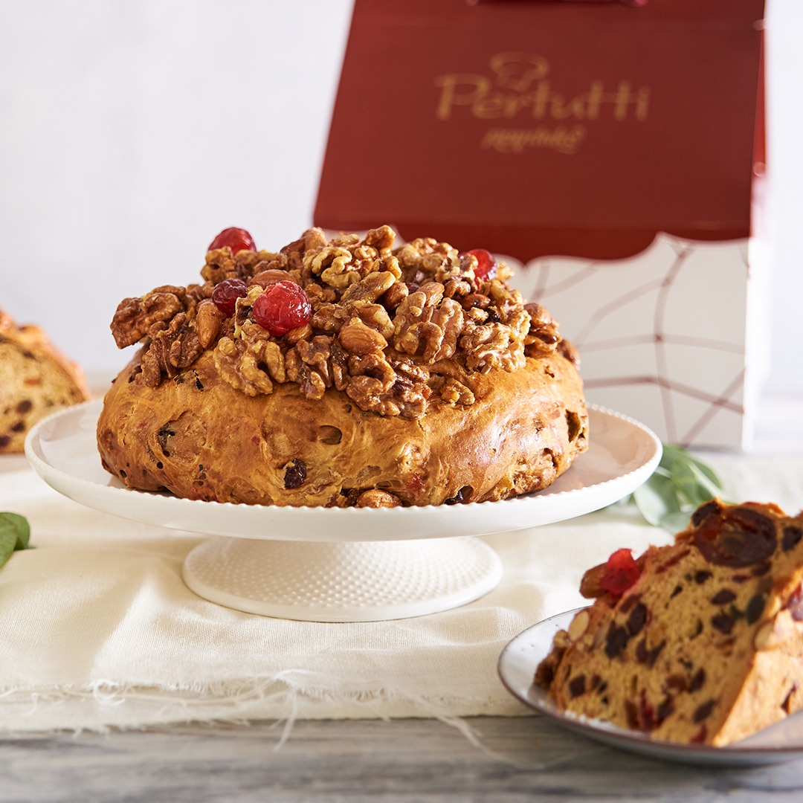
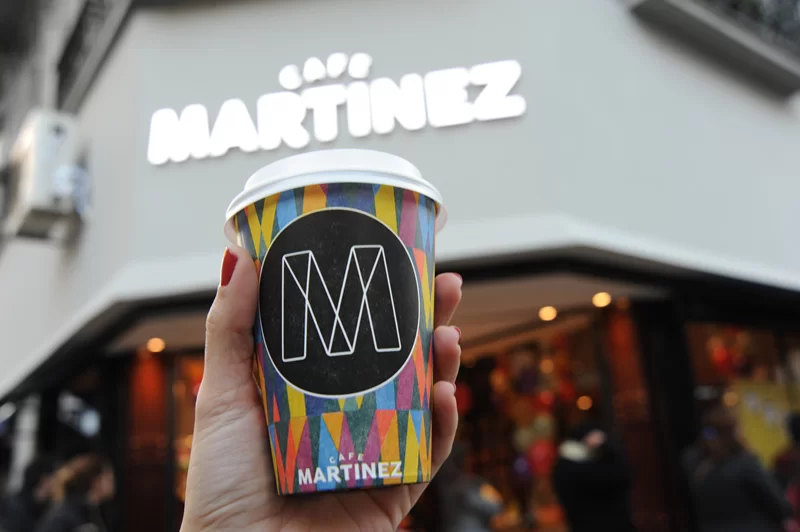

DESAYUNOS
Desayunos que despiertan los sentidos! Nuestra selección ideal para consentirte o sorprender a alguien especial
- El valor es de $82.000
- El menú incluye una merienda para dos personas
- En cada restaurante vas a tener la opción de ver el menú que ofrece. Revisa bien antes de comprar
1 - Pertutti
Disfrutá de un desayuno delicioso en Pertutti, conocido por su ambiente acogedor y variedad de opciones para comenzar el día.

El menú incluye:
- Café con leche o té
- 3 medialunas artesanales
- Jugo de naranja natural
2 - Le Pain Quotidien
Le Pain Quotidien ofrece un ambiente tranquilo y saludable, ideal para disfrutar de un desayuno orgánico y delicioso!

El menú incluye:
- Tostadas integrales con mermeladas orgánicas
- Yogur con granola
- Infusión a elección
3 - Tea Connection
Tea Connection es el lugar perfecto para quienes buscan opciones saludables y deliciosas en su desayuno!

El menú incluye:
- Matcha latte o jugo detox
- Sandwich de pan de masa madre
- Budín de banana integral
4 - Café Martinez
Café Martinez te invita a tener una experiencia única de sabor y calidez. Disfrutá de cafés de calidad, delicias artesanales y un ambiente acogedor que invita a quedarte!

El menú incluye:
- Café espresso doble o capuccino
- Medialunas rellenas
- Mini torta del día
5 - Starbucks
Starbucks ofrece una experiencia internacional con su variedad de cafés y opciones para desayunar!

El menú incluye:
- Latte o Americano (tamaño mediano)
- Muffin o Cookie a elección
- Fruta de estación o jugo natural